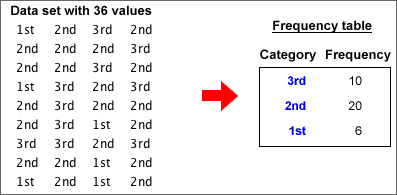

Numerical and categorical data
In a data set, a numerical variable contains a number from each individual. A categorical variable classifies each individual into one of several groups.
Frequency tables
For a categorical variable, the frequencies for the distinct categories are the number of times each category occurs in the data set. The frequencies fully capture all information about the distribution of values and are usually presented in a frequency table.
